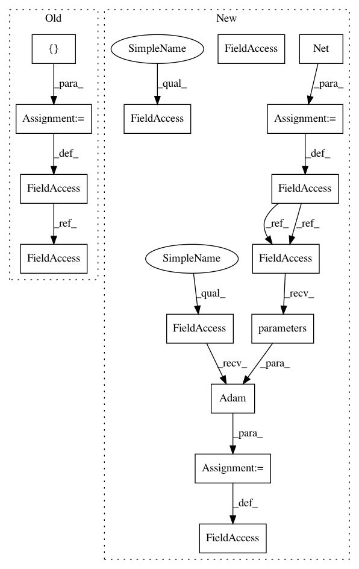

e2db3b3f1d3d23cd5bc1e295835e0f4b33e95447,examples/cora_gcn.py,,,#,57
Before Change
return pred.eq(data.target.data[mask]).sum() / mask.size(0)
acc = []
for run in range(1, 101):
model.conv1.reset_parameters()
model.conv2.reset_parameters()
old_val = 0
cur_test = 0
for _ in range(0, 200):
train()
val = test(val_mask)
if val > old_val:
old_val = val
cur_test = test(test_mask)
acc.append(cur_test)
print("Run:", run, "Test Accuracy:", acc[-1])
acc = torch.FloatTensor(acc)
print("Mean:", acc.mean(), "Stddev:", acc.std())
After Change
return F.log_softmax(x, dim=1)
model = Net()
if torch.cuda.is_available():
train_mask, val_mask = train_mask.cuda(), val_mask.cuda()
test_mask, model = test_mask.cuda(), model.cuda()
optimizer = torch.optim.Adam(model.parameters(), lr=0.01, weight_decay=0.005)
def train():
model.train()
In pattern: SUPERPATTERN
Frequency: 3
Non-data size: 15
Instances
Project Name: rusty1s/pytorch_geometric
Commit Name: e2db3b3f1d3d23cd5bc1e295835e0f4b33e95447
Time: 2018-03-07
Author: matthias.fey@tu-dortmund.de
File Name: examples/cora_gcn.py
Class Name:
Method Name:
Project Name: rusty1s/pytorch_geometric
Commit Name: e2db3b3f1d3d23cd5bc1e295835e0f4b33e95447
Time: 2018-03-07
Author: matthias.fey@tu-dortmund.de
File Name: examples/cora_gcn.py
Class Name:
Method Name:
Project Name: Scitator/catalyst
Commit Name: 2775c15702fd52f081ff8fded51f4f38877659df
Time: 2019-08-01
Author: scitator@gmail.com
File Name: examples/_tests_scripts/z_classification.py
Class Name:
Method Name: